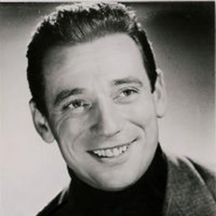
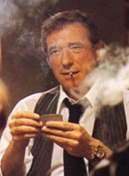
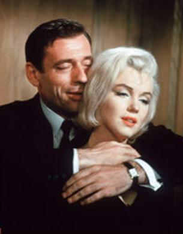
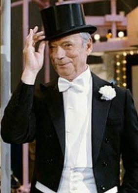

Date commémorative : le mois prochain nous marquerons l'anniversaire de la naissance d’Yves Montand
par Guennady KLIAGUINE
Yves Montand (le vrai nom Ivo Livi, né le 13 octobre 1921 à Monsummano Terme en Italie, mort le 9 novembre 1991 à Senlis en France) est un chanteur-chansonnier français et un acteur.
Il est né dans la famille de pauvres Juifs italiens. Le père d’Ivo était un membre du Parti socialiste, puis du Parti communiste d'Italie. Après l'arrivée au pouvoir des fascistes à la tête avec Benito Mussolini, la famille Livi est obligée de déménager en France (Marseille) en 1924. Dès 11 ans le garçon travaille à l'usine pour quelque peu soutenir sa famille qui s'est embourbée dans ses dettes. La conception du monde de jeune Montand s’est formée sous l'influence des idées communistes dont son père et son frère aîné Julien étaient des partisans actifs.
A dix-sept ans Ivo Livi est entré en scène pour la première fois sous le pseudonyme d’Yves Montand (« Мontand » a l’origine d’une phrase en dialecte original italo-français « Ivo, моnta », -comme la mère l'appelait à la maison dans l'enfance). À la fin de 1938 Ivo execute pour la première fois les chansons au cinéma avant la séance. Après l'entrée de la France en guerre contre l'Allemagne fasciste, Montand est obligé d’abandonner le chant et de s'installer (1940) sur les chantiers maritimes comme marteleur. Néanmoins il continuait les répétitions chez soi sans perdre l'espoir de retourner vers la musique.
Au printemps 1941, Montand de nouveau entre en scène et sa popularité commence vite à grandir. Ensuite ses premières tournées en France et son intervention sur la radio sont suivis. Puis sa carrière de chanson s'interrompt de nouveau : Yves Montand est obligé de travailler sur « Les Chantiers de Jeunesse » remplaçant le service militaire obligatoire pendant l'occupation de la France. En 1944, Yves vient pour la première fois à Paris et débute avec succès dans la grande salle de concerts ABC.
La rencontre avec Édith Piaf a joué un rôle immense dans la formation professionnelle du chanteur et dans sa vie privée. Après l'écoute et les premières interventions communes, elle était tellement fascinée par le jeune Marseillais qu’elle s'est enflammée du désir de faire de lui un vrai professionnel. Sous la tutelle de Piaf, Montand, qui s'est avéré un très bon élève, en se préparant en autodidactie, commence à apprendre les manières comportementales sur la scène et dans la société, et élargit son répertoire qui avait été inspiré auparavant sur de simples chansonnettes américaines. Maintenant, l'interprète est devenu beaucoup plus retenu et mûr devant le public. L'origine prolétarienne contribue beaucoup à la croissance de la popularité de Montand, le public l'accepte comme le leur, la distance entre l'interprète et l'auditeur a été effacée. Entre-temps le roman d'amour entre Montand et Piaf s'enflamme, cependant, puisque pour les deux la carrière était à la première place, la passion s'éteint mutuellement. Dès l'automne 1945 ils n'organisent plus les concerts communs. En lui disant adieu, Piaf a fait un dernier cadeau à son protégé en lui ouvrant les portes du cinématographe, auquel il aspire tant. A ce moment-là dans le répertoire de Montand il y avait « Les Grands Boulevards » et « Le Fanatique du Jazz ». Les mélodies de ses chansons sont très différentes : de mélancoliques, presque sombres, jusqu'à pleines de bravoure. La presse l'a appelé comme « un des artistes les plus remarquables dès l’époque de Charles Trenet ».
Le rôle principal dans le film de Marcel Carné selon le scénario de Jacques Prévert « Les Portes de la Nuit » (1946) révèle la valeur d’Yves Montand au cinéma. Malheureusement, le film n’a reçu pas les meilleures critiques et ce qui se retourne contre Montand. Néanmoins, un contrat septennal avec Hollywood est proposé bientôt à l'artiste, et lui, sans trop réfléchir, signe les papiers, mais il le regrettera ensuite, ayant compris que que cela représentait la servitude pour sept ans. Le contrat a été résilié et la rencontre avec Hollywood a été remise sur les douze ans entiers.
À la fin de 1940 Yves Montand continue à se produire avec les concerts et commence à enregistrer les disques. Le répertoire de l'artiste a été de nouveau changé : parmi les anciennes chansons, il reste seulement celles qui ont du succès permanent (« Battling Joe », « Luna Park", « La Grande Cité »), il chante beaucoup de nouvelles chansons sur les vers de Jacques Prévert et Léo Ferré. En même temps Montand a commencé à exécuter les chansons du film « Les Portes de la Nuit » : « Les Enfants, Qui S'aiment» et « Les Feuilles Mortes ». Cette dernière devient avec le temps la plus populaire dans son répertoire. Au printemps 1949, le chanteur au succès immense se produit à ABC, au lieu d’Édith Piaf (à sa demande), et en automne - aux concerts à « L’Étoile » où il remet pour la première fois la chanson de Francis Lemarque, « À Paris » au jugement du public.
À l’horizon des années 1950 Montand fait connaissance avec l'actrice Simone Signoret, et le plus grand amour entre dans sa vie. Simone était mariée avec le metteur en scène Yves Allégret et ne se décidait pas longtemps de se séparer d’avec lui, d'autant plus que chez eux grandissait leur fille. Yves et Simone se sont mariés en 1951. Durant les premières années de leur vie commune Simone Signoret a préféré rester aux côtés de son mari, en refusant une série de propositions attractives venant d’Hollywood. À partir de 1951 Montand commence régulièrement à se produire à « L’Étoile » avec de grands tours en solo. Vingt-deux chansons et deux poèmes en une soirée ! Montand s’intéresse en premier lieu aux mots, ensuite - à la musique, dans ses chansons. À cette époque le chanteur a établi le record absolu en France : plus de deux cents représentations à la suite, plus de deux cent mille billets vendus, la recette des concerts a fait 118 millions de francs. La société « ODEON » a produit le disque d'or « Les Feuilles Mortes ». À partir du film d’Henri-Georges Clouzot « Le Salaire de la Peur » (1952), qui a reçu le Grand Prix du festival de Cannes, Montand trouve le succès longtemps attendu dans au cinéma.
Dans les années 1950 Yves Montand commence à s'intéresser à la politique. Il signe l'appel sur l'interdiction de l'arme nucléaire, participe à d'autres actions pour la protection de la Paix et par la tradition familiale sympathise avec les Communistes. Au milieu des événements hongrois en 1956 le chanteur prend la décision difficile d'aller avec les tournées prévues auparavant dans l'URSS et d'autres pays socialistes. Le public français ne voit pas d’un bon œil cette visite, mais en URSS elle est considérée comme une manifestation de la solidarité politique. Le chanteur est invité aux « quatre bateaux » et au banquet avec la direction supérieure soviétique, où Montand reçoit la possibilité de communiquer personnellement avec le dirigeant de l'Union Soviétique de l’époque, Nikita Khrouchtchev. Les salles de concerts regorgent de la pression de milliers de personnes souhaitant voir et entendre le chansonnier français. Les queues immenses s'alignent près des caisses, où des listes avec les numéros d'ordre astronomiques sont dressées. Le coût d’un billet d’entrée est à 20 roubles soit approximativement le quart de salaire de beaucoup personnes. Au « marché noir » le coût devient deux à trois fois plus élevé. Après la célébration du Nouvel An au Kremlin, Montand se produit à Leningrad et à Kiev, puis il visite la Pologne, l'Allemagne de l'Est, la Tchécoslovaquie, la Roumanie, la Bulgarie, la Yougoslavie et la Hongrie. Partout ses concerts se passent dans des salles complètes et sont accompagnés d’une frénésie extraordinaire. Malgré l'accueil exalté, Montand a pu voir par ses yeux ce que le socialisme représente et apprendre beaucoup de choses, dont il n'avait nulle idée à Paris. À partir de ce moment, la séparation assez douloureuse de l'artiste avec les illusions communistes a progressivement commencé.
Longtemps les Américains refusent de donner les visas d'entrée à Montand et à sa femme à cause de leurs opinions « gauchistes », cependant, en 1959, le chanteur a pu avoir l’accord de tournées aux États-Unis qui se sont déroulées avec un succès retentissant. À la première, à New York, il y avait beaucoup d’étoiles américaines, y compris Marilyn Monroe, Edward Montgomery Clift, Ingrid Bergman, Marlene Dietrich. Le style des chansons-histoires de Montand, qui nécessite la mimique et le mouvement, était tout à fait inaccoutumé pour les Américains et était tellement original qu'ils l’ont baptisé « le style de Montand ». Montand avait des problèmes sérieux avec la langue anglaise, mais grâce aux répétitions minutieuses et à l'étude soigneuse du scénario, il a réussi à dissimuler ces difficultés. Montand démontrait un naturel inné dans son comportement sur scène. Les journaux parlent alors d’un « magnétisme presque animal » du chanteur et le désignent comme le nouveau sex-symbol.
Après une tournée couronnée de succès aux États-Unis, l'artiste a obtenu une proposition pour le rôle principal masculin dans la comédie musicale « Faisons l'amour » (1960), où Marilyn Monroe était sa partenaire. Cette proposition a été faite à la demande de Monroe. Elle a également initié un partenariat bientôt transformé en un roman orageux divulgué par la presse et qui a bien failli être la raison d’une séparation entre Yves et Simone. Cependant Montand a trouvé la force de se séparer d’avec la diva du cinéma américain, et Simone a trouvé la force de pardonner à son mari.
Dans les années suivantes, Yves Montand continue à jouer dans des films et se produire sur scène, pour devenir chanteur français le plus populaire des années 1960. En 1963, le chanteur et sa femme font la deuxième visite à Moscou, cette fois en tant qu'invités du Festival International du Film de Moscou. Au cours de ces années, il commence une collaboration très fructueuse avec le réalisateur Costa-Gavras. Après la répression de l'insurrection en Tchécoslovaquie en 1968, l'acteur est finalement déçu par les idéaux communistes et en informe ouvertement le public. Ensuite il rompt d’une manière bruyante les relations avec son frère Julien. En ce temps, le film « L’Aveu » (1970), réalisé par Costa-Gavras, basée sur des preuves documentaires d’un dissident tchécoslovaque, a un grand succès.
Dès la fin des années 1960, Montand se donne corps et âme au cinéma, apparaissant sur la scène musicale seulement occasionnellement. Les œuvres de l'acteur acquièrent souvent une teinte antitotalitaire bien accentuée, et son image devient de plus en plus politisée. Depuis 1964, le nom de Montand a été toujours mis sur les affiches de cinémas, il joue dans les films de réalisateurs les plus célèbres avec des actrices les plus connues. Dans ses dernières années, l'acteur était devenu tellement actif politiquement qu'il a commencé à être considéré comme un candidat à la présidence de la France. L’exemple récent de Ronald Reagan était devant les yeux de tous. Montand a répondu comme suit : « Reagan était un bon président, mais il était un mauvais acteur. Cela n’est pas mon cas ». Toutefois, selon les sondages, un tiers des électeurs français étaient prêts à confier la présidence à Yves Montand. Une fois l'acteur a déclaré qu'il croiera à la démocratisation des pays socialistes, quand Moscou affichera le film « L’Aveu ». Il lui faudra attendre l’été 1990 pour être invité avec d'autres cinéastes à Moscou pour la première du film. Il continuera à travailler jusqu'au dernier jour de sa vie et est va mourir pendant le tournage de « IP5: L'île aux pachydermes ».
Guennady KLIAGUNE,
Doyen du Département Français des Sciences et Techniques,
l’Université Nationale Technique de Donetsk
Chanson «Когда поёт далёкий друг» (« Quand l'ami lointain chante ») consacrée à Yves Montand et interprétée par Mark Bernes (paroles : Yakov Helemsky / musique : Boris Mokroussov)
Задумчивый голос Монтана
Звучит на короткой волне.
И ветки каштанов,
Парижских каштанов,
В окно заглянули ко мне.
Припев: Когда поет далекий друг,
Теплей и радостней становится вокруг,
И сокращаются большие расстояния,
Когда поет хороший друг!
А песня все ближе, все ближе
Летит и звенит над Москвой,
В ней думы Парижа,
Улыбка Парижа,
В ней голос народа живой...
Влюблённые кружатся пары
И молодость дружит с певцом
И музыке вторят большие бульвары
С московским садовым кольцом
Радушие наше знакомо
Посланцам далёких широт
Желанная гостья в России как дома
Французская песня живёт
Chanson « Ami lointain » (version française de la chanson « Quand l'ami lointain chante ») interprétée par Yves Montand (paroles : Francis Lemarque / musique : Boris Mokroussov)
Le cœur d’une ville inconnue
Se livre au hasard des rues
J’étais l’étranger venu là pour un soir
Et soudain j’ai croisé un regard
Ce n’était rien rien qu’un passant
Il m’a sourit sur mon chemin comme un ami
Je ne sais pas pourquoi je garde encore l’image
De ce visage plein de chaleur
Perdu dans la foule tranquille
Je suis resté immobile
Il s’est retourné un instant
Et de loin j’ai pu voir s’agiter une main
Ce n’était rien rien qu’un adieu
Ou un bonjour donné de loin
Là sur mon chemin
Mais tous les mots n’auraient pu m’en dire davantage
Partager cette page